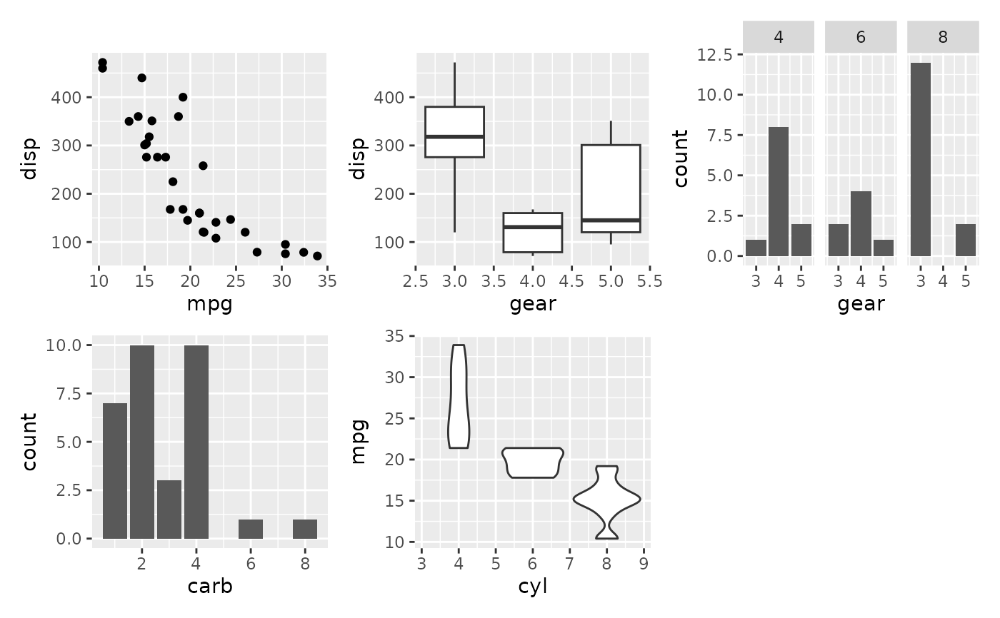
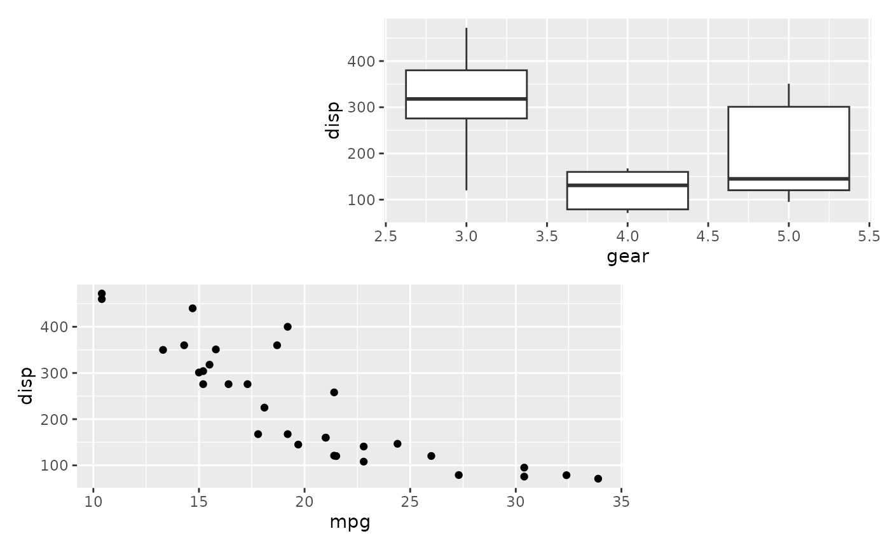
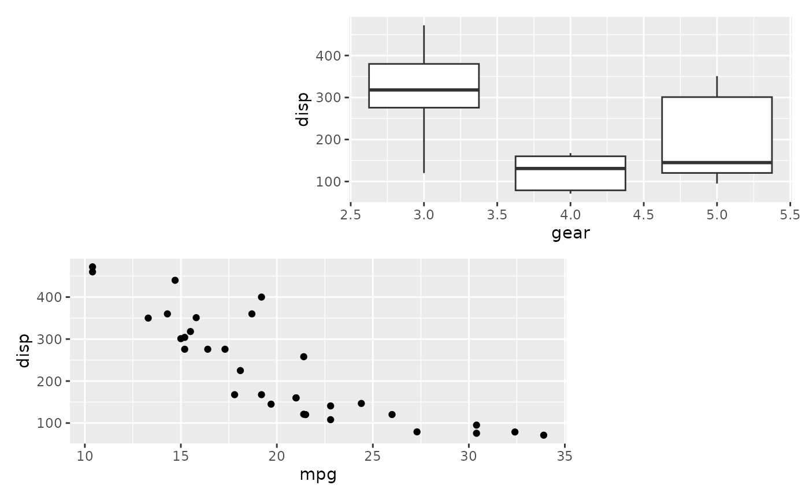

While the use of + is a natural way to add plots together, it can be
difficult to string together multiple plots programmatically if the number
of plots is not known beforehand. wrap_plots makes it easy to take a list
of plots and add them into one composition, along with layout specifications.
wrap_plots(
...,
ncol = NULL,
nrow = NULL,
byrow = NULL,
widths = NULL,
heights = NULL,
guides = NULL,
tag_level = NULL,
design = NULL
)Arguments
- ...
multiple
ggplots or a list containingggplotobjects- ncol, nrow
The dimensions of the grid to create - if both are
NULLit will use the same logic as facet_wrap() to set the dimensions- byrow
Analogous to
byrowin matrix(). IfFALSEthe plots will be filled in in column-major order- widths, heights
The relative widths and heights of each column and row in the grid. Will get repeated to match the dimensions of the grid.
- guides
A string specifying how guides should be treated in the layout.
'collect'will collect guides below to the given nesting level, removing duplicates.'keep'will stop collection at this level and let guides be placed alongside their plot.autowill allow guides to be collected if a upper level tries, but place them alongside the plot if not. If you modify default guide "position" with theme(legend.position=...) while also collecting guides you must apply that change to the overall patchwork (see example).- tag_level
A string (
'keep'or'new') to indicate how auto-tagging should behave. Seeplot_annotation().- design
Specification of the location of areas in the layout. Can either be specified as a text string or by concatenating calls to
area()together. See the examples for further information on use.
Value
A patchwork object
Details
If design is specified as a text string and the plots are named (e.g.
wrap_plots(A = p1, ...)) and all plot names are single characters
represented in the design layout string, the plots will be matched to their
respective area by name. Otherwise the areas will be filled out
sequentially in the same manner as using the + operator. See the examples
for more.
Examples
library(ggplot2)
p1 <- ggplot(mtcars) + geom_point(aes(mpg, disp))
p2 <- ggplot(mtcars) + geom_boxplot(aes(gear, disp, group = gear))
p3 <- ggplot(mtcars) + geom_bar(aes(gear)) + facet_wrap(~cyl)
p4 <- ggplot(mtcars) + geom_bar(aes(carb))
p5 <- ggplot(mtcars) + geom_violin(aes(cyl, mpg, group = cyl))
# Either add the plots as single arguments
wrap_plots(p1, p2, p3, p4, p5)

# Or add them as a list...
plots <- list(p1, p2, p3, p4, p5)
wrap_plots(plots)
 # Match plots to areas by name
design <- "#BB
AA#"
wrap_plots(B = p1, A = p2, design = design)
# Match plots to areas by name
design <- "#BB
AA#"
wrap_plots(B = p1, A = p2, design = design)
 # Compare to not using named plot arguments
wrap_plots(p1, p2, design = design)

# Compare to not using named plot arguments
wrap_plots(p1, p2, design = design)
